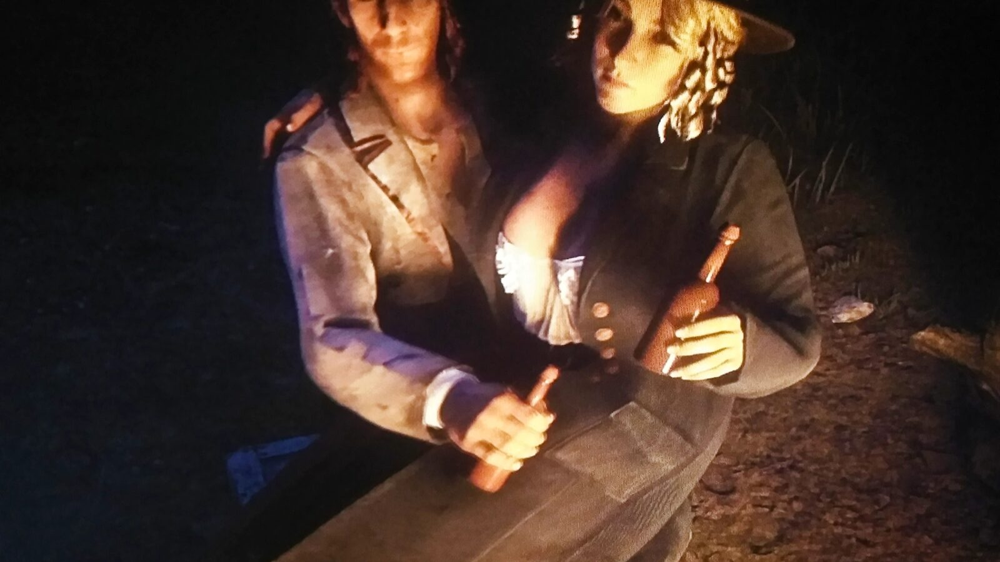
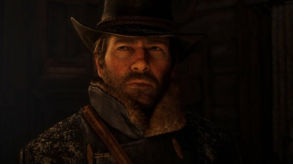
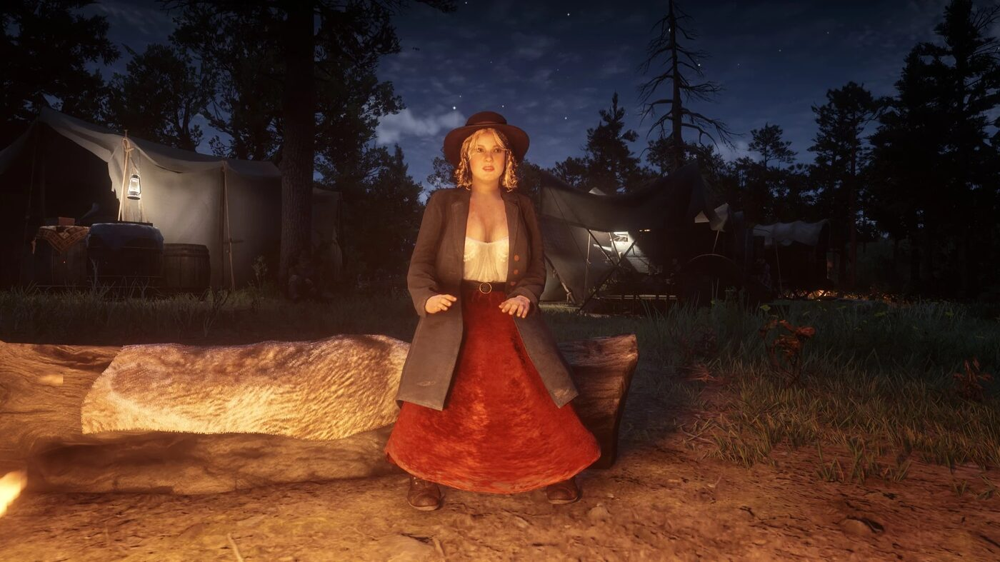

Character · Van der Linde gang
Karen Jones
Karen Jones is a con-artist and robber in the Van der Linde gang in Red Dead Redemption 2. She works the scams and holdups, and is one of only two women in the gang, with Sadie Adler, to take camp guard duty.
She is the one who sets up the Valentine bank robbery, and her arc across the game is one of hard drinking and growing disillusion as the gang falls apart.
- Affiliation
- Van der Linde gang
- Role
- Con-artist and robber
- Status
- Unknown (leaves the gang)
- Nationality
- American
- Games
- Red Dead Redemption 2
Biography
The Valentine bank robbery
In Chapter 3, Karen initiates the robbery of the bank in Valentine, recruiting Arthur, Lenny and Bill and posing as a distressed woman to get the drop on the staff. Earlier, in Valentine, Arthur rescues her when a mark she tries to rob punches her.
Drinking and disillusion
As the gang deteriorates, Karen's drinking worsens. At Beaver Hollow she turns bitter and openly berates Susan Grimshaw for killing Molly O'Shea. She is close to the gang's other women, Tilly Jackson and Mary-Beth Gaskill.
Karen and Sean
Karen has a brief romance with Sean MacGuire, beginning with a drunken night at his homecoming party. She later pushes him away, but after his death she gives him a campfire-song sendoff alongside Susan Grimshaw.
Relationships
Sean MacGuire
The young gang member she has a brief, volatile romance with.

Arthur Morgan
Fellow gang member who backs her scams and pulls her out of trouble in Valentine.

Susan Grimshaw
The camp's matriarch, whom Karen turns on after she kills Molly O'Shea.
Fate
Karen abandons the gang at Beaver Hollow, alongside Simon Pearson, Mary-Beth Gaskill and Uncle. After the gang falls, she disappears from view. In an epilogue letter, Tilly Jackson writes that she fears Karen drank herself to death, but the game never confirms it. Her fate is left unknown.
Behind the scenes
Karen Jones appears in Red Dead Redemption 2 (2018). She is voiced by Jo Armeniox.
Trivia
- She and Sadie Adler are the only gang women to take guard duty.
- As her drinking worsens through the game, her hair grows progressively unkempt.
- She is the only gang member whose face is not seen in Chapter 1.
Gallery
